凛 · 新人调查员
米泽家的大小姐。按理说应该是三神教的护法之一，但是忍受不了那些繁文缛节让大哥给安排了一出“离家出走”。现任职于“联合城异常调查处(UAID)”，职位是初级调查员。但因为笨手笨脚常常被上司训斥。
获得1张活体书页；效果牌射程+3，持续1回合。
事件触发后，获得1张活体书页。
PVE事件触发后，获得1张活体书页。每次使用活体书页后，活体书页伤害永久+1。
基础资料
PVE 特性
- 达到1星时立刻获得10星币
- 初始星币+6
- 达到3星时攻击力+1、防御力+1、移动速度+1
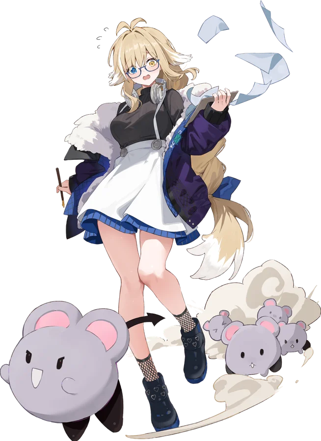
默认

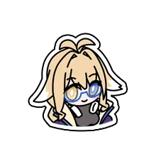
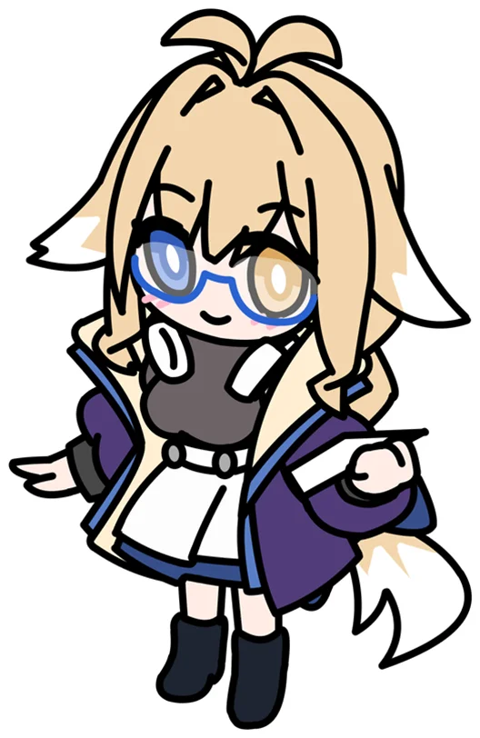
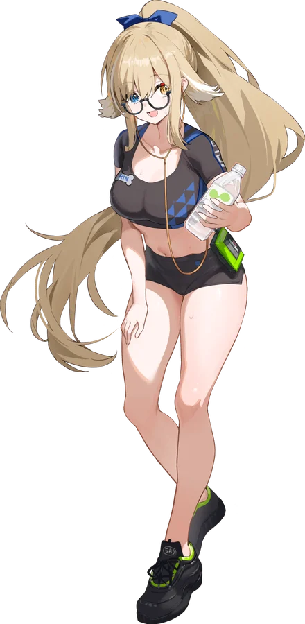
羁绊皮肤
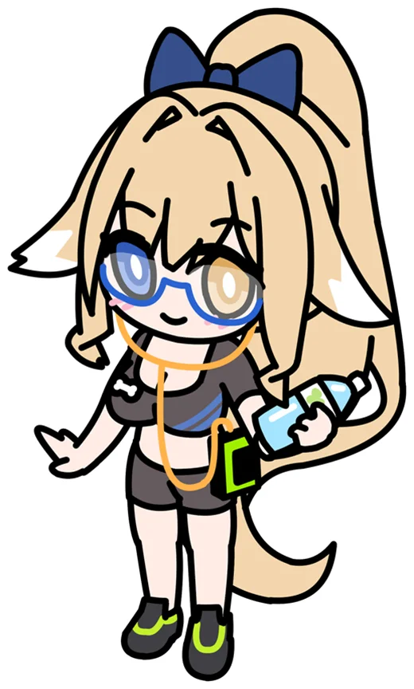
海湾假日
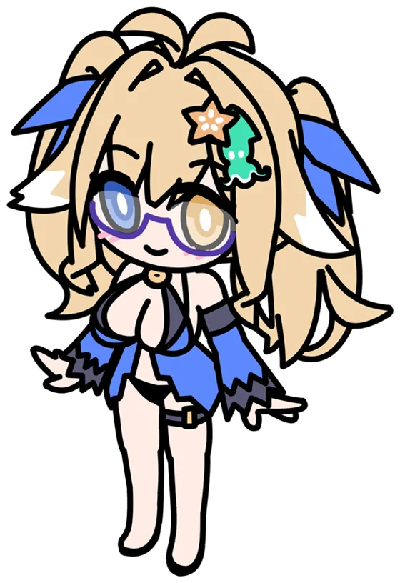
凛自从“离家出走”以后，就很少出现在调查处、出租屋和雅央家以外的地方。 难得调查处组织了旅游，凛经过一番激烈的思想斗争，还是随着同事一同前往。 这也是出于交际的考虑，毕竟总不能一直什么公共活动都不参加，这样显得她很不合群。 不过别看凛弱气的外表，运动能力意外地不错，下水游泳或海里冲浪都不在话下。 但是很不凑巧，最近的疲劳使她这次更倾向于海边散步，而冲浪却成为了“交际”的一环。 “海边散散步、帮同事们烧烤，也挺好的，不是吗？”
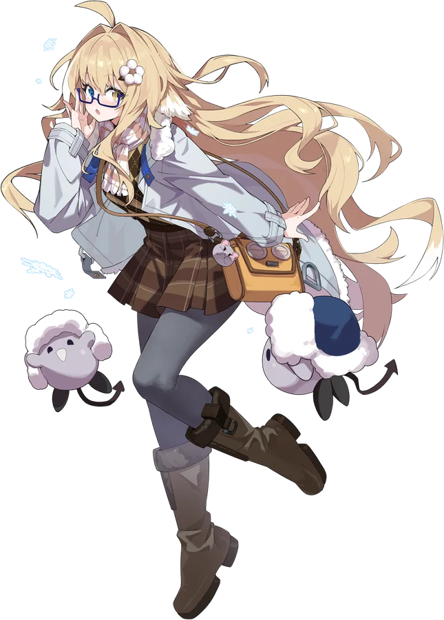
冬日暖意
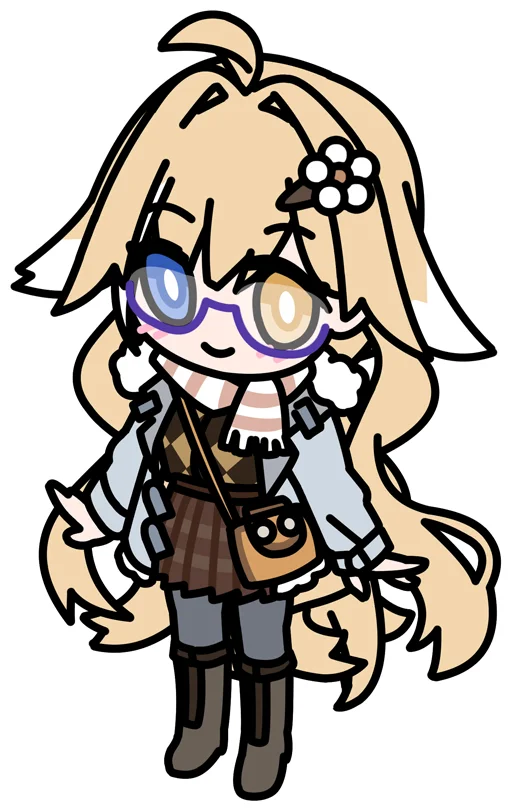
对于凛而言，每年的年末她都有一项重要的任务。 坐在沙发上换衣服的凛拨通了电话。 “起床没，等下去老地方买蛋糕，你要吃什么口味的？” “呃，它那里有薯片味道的吗？”雅央很认真地问道。 “那我给你带个榴莲味的好了。”凛并没有接雅央的话茬。 “唉别别别！你还是给我带个芝士蓝莓的吧…” “那晚上想吃点啥，美咲被御主大人临时叫走了，可能晚饭才能来了，她说她想吃咖喱。你呢？” “那我也咖喱吧，哦不要放洋葱！” “嗯，知道了，那我买完东西再去你家，等会见。”凛正准备挂断电话。 “每年都要你们来陪我，真不好意思哈。”雅央突然说了这么一句话。 凛愣了一下，她和雅央从小到大玩了这么长时间，她今天是怎么了？ “啊！那个啥！今天外面还怪冷的！你多穿点！还有叫美咲也多穿点别着凉感冒给我传染了！那就这样！”雅央挂断了电话。 凛回过神来后，掏出了她最暖和的衣服，里面甚至还有一条雅央去年送她和美咲的围巾。 “真是个笨蛋。”凛边笑边走出了家门。
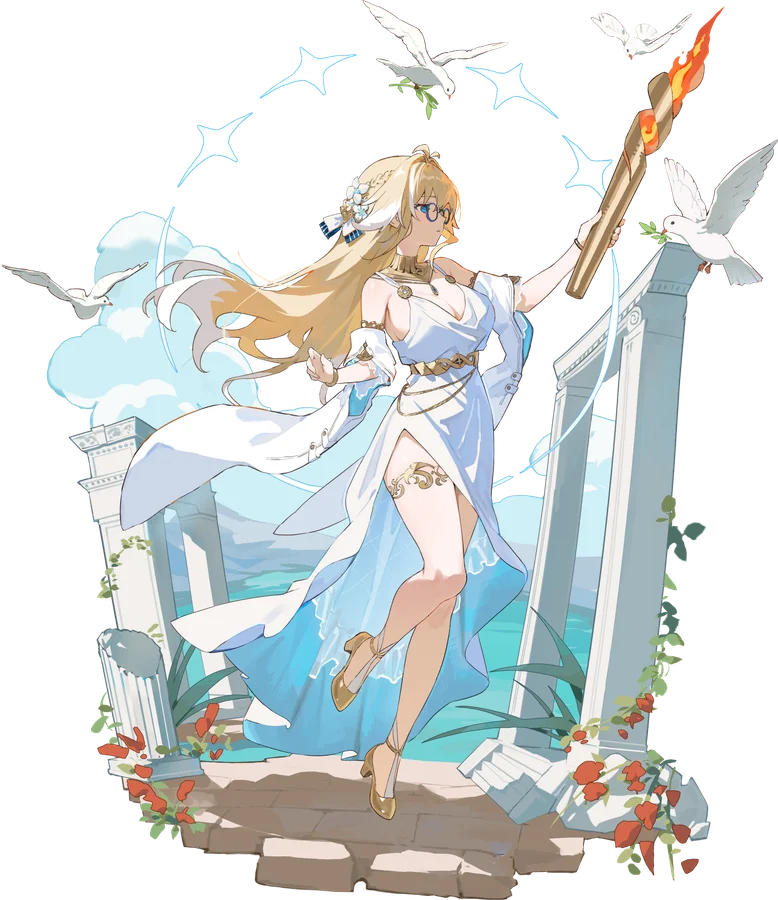
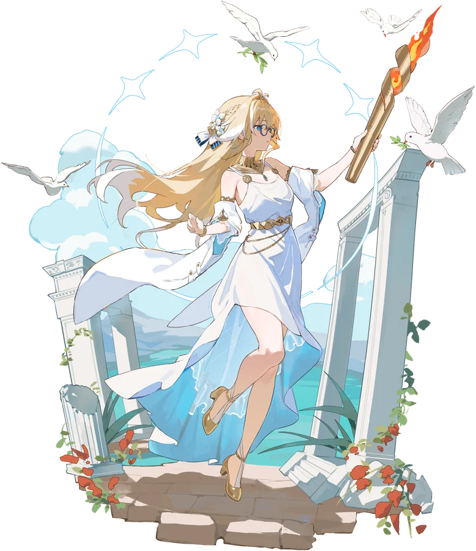
永恒圣火

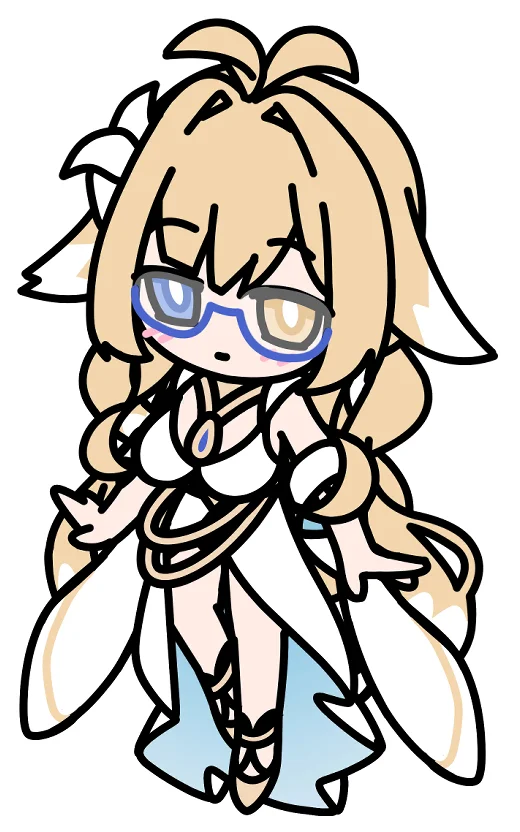
“科长，这样吗？”凛对着镜头毫不紧张，她已经完全习惯了调查科的“奇怪”任务。 “这东西就对你有反应，之前都像根擀面棍一样，只有你才行，抱歉！”异常调查科的科长隔着厚厚的玻璃窗，双手合十摆出了“对不起”的姿势。 “没什么啦，我平时都不怎么出现场，这种活动大家能信任我也是对我的肯定啊。”凛并没有觉得科长他们对不起自己，反而觉得科长和科员们应该给自己更多的活儿干，而不是在大后方摆弄这些“异常”。 “你要知道，虽然是你大哥推荐你来这里的，但若没有真本事，怎么可能留你呢？”科长一边说道，一边指挥旁边的人拍下照片。 “你能和很多‘异常’产生共鸣，并且很好地解析这些东西，这才是你对我们最大的帮助。不是每个人都要去现场才能发挥作用，我们从没把你当‘走后门’的人，因为你对我们来说是必须的。” 凛没有说话，只是默默地按照摄影的要求摆出下一个姿势。 是啊，一向腼腆的凛因为各种原因，靠着和大哥的“演戏”逃离了家里的高压环境，而异常调查科的同事们则接受了她。她现在觉得已经很开心了，至少不是为了“某件事”活着。 凛清理了一下思绪，摆出了下一个动作。 “那今天这个摄影是干什么的呢？归档吗？”凛好奇地问道，因为这种奇怪的任务一般都有它的“目的”。 “嗯，下周要举行大型运动会，别的部门要点宣传海报。”科长平淡地说道。 “哦，宣传海报啊？懂了。”凛下意识地回复道。 “啊？宣传海报？不是为了归档？”凛突然反应过来，好像有什么不对。 “嗯？秘书没告诉你吗？没你想的那么复杂，只是大家都觉得你可以和这东西共鸣，形象又……算了！弄完我请大家去喝两杯！”科长赶快岔开了话题。 听到接下来收工后科长请客，大家都欢呼起来。凛此时只想把刚才的感动收回来，不过，这也算是自己当下生活的一环吧。
共 15 个表情，点击可放大。
官方 wiki 没有这角色的 /获取 页，头像、名片、卡牌、骰子的完整清单暂缺；下方「档案」里保留了画廊中的零散素材。
人物传记
时常因为工作郁闷会去雅央那里过周末，做得一手连雅央和美咲都赞不绝口的料理。
皮肤故事
海湾假日
凛自从“离家出走”以后，就很少出现在调查处、出租屋和雅央家以外的地方。 难得调查处组织了旅游，凛经过一番激烈的思想斗争，还是随着同事一同前往。 这也是出于交际的考虑，毕竟总不能一直什么公共活动都不参加，这样显得她很不合群。 不过别看凛弱气的外表，运动能力意外地不错，下水游泳或海里冲浪都不在话下。 但是很不凑巧，最近的疲劳使她这次更倾向于海边散步，而冲浪却成为了“交际”的一环。 “海边散散步、帮同事们烧烤，也挺好的，不是吗？”
冬日暖意
对于凛而言，每年的年末她都有一项重要的任务。 坐在沙发上换衣服的凛拨通了电话。 “起床没，等下去老地方买蛋糕，你要吃什么口味的？” “呃，它那里有薯片味道的吗？”雅央很认真地问道。 “那我给你带个榴莲味的好了。”凛并没有接雅央的话茬。 “唉别别别！你还是给我带个芝士蓝莓的吧…” “那晚上想吃点啥，美咲被御主大人临时叫走了，可能晚饭才能来了，她说她想吃咖喱。你呢？” “那我也咖喱吧，哦不要放洋葱！” “嗯，知道了，那我买完东西再去你家，等会见。”凛正准备挂断电话。 “每年都要你们来陪我，真不好意思哈。”雅央突然说了这么一句话。 凛愣了一下，她和雅央从小到大玩了这么长时间，她今天是怎么了？ “啊！那个啥！今天外面还怪冷的！你多穿点！还有叫美咲也多穿点别着凉感冒给我传染了！那就这样！”雅央挂断了电话。 凛回过神来后，掏出了她最暖和的衣服，里面甚至还有一条雅央去年送她和美咲的围巾。 “真是个笨蛋。”凛边笑边走出了家门。
永恒圣火
“科长，这样吗？”凛对着镜头毫不紧张，她已经完全习惯了调查科的“奇怪”任务。 “这东西就对你有反应，之前都像根擀面棍一样，只有你才行，抱歉！”异常调查科的科长隔着厚厚的玻璃窗，双手合十摆出了“对不起”的姿势。 “没什么啦，我平时都不怎么出现场，这种活动大家能信任我也是对我的肯定啊。”凛并没有觉得科长他们对不起自己，反而觉得科长和科员们应该给自己更多的活儿干，而不是在大后方摆弄这些“异常”。 “你要知道，虽然是你大哥推荐你来这里的，但若没有真本事，怎么可能留你呢？”科长一边说道，一边指挥旁边的人拍下照片。 “你能和很多‘异常’产生共鸣，并且很好地解析这些东西，这才是你对我们最大的帮助。不是每个人都要去现场才能发挥作用，我们从没把你当‘走后门’的人，因为你对我们来说是必须的。” 凛没有说话，只是默默地按照摄影的要求摆出下一个姿势。 是啊，一向腼腆的凛因为各种原因，靠着和大哥的“演戏”逃离了家里的高压环境，而异常调查科的同事们则接受了她。她现在觉得已经很开心了，至少不是为了“某件事”活着。 凛清理了一下思绪，摆出了下一个动作。 “那今天这个摄影是干什么的呢？归档吗？”凛好奇地问道，因为这种奇怪的任务一般都有它的“目的”。 “嗯，下周要举行大型运动会，别的部门要点宣传海报。”科长平淡地说道。 “哦，宣传海报啊？懂了。”凛下意识地回复道。 “啊？宣传海报？不是为了归档？”凛突然反应过来，好像有什么不对。 “嗯？秘书没告诉你吗？没你想的那么复杂，只是大家都觉得你可以和这东西共鸣，形象又……算了！弄完我请大家去喝两杯！”科长赶快岔开了话题。 听到接下来收工后科长请客，大家都欢呼起来。凛此时只想把刚才的感动收回来，不过，这也算是自己当下生活的一环吧。
画廊其他素材


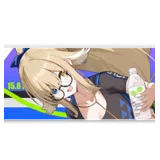
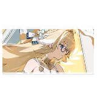
本地未收录该角色的语音台词。